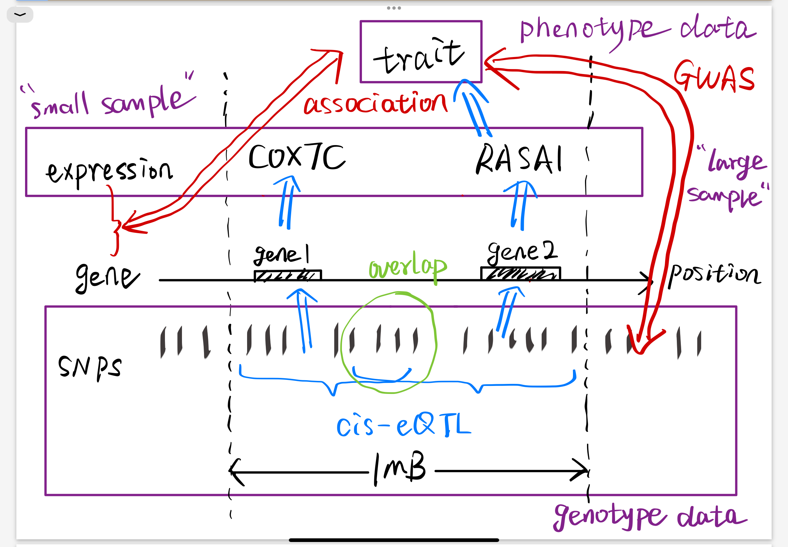
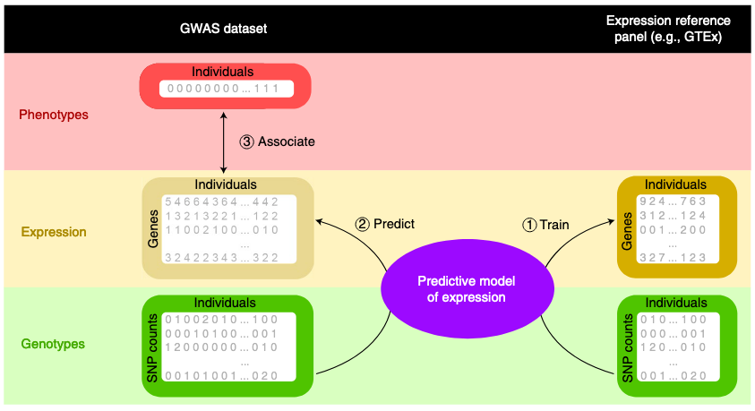

TWASs aim to integrate genome-wide association studies (GWASs) with gene expression-mapping studies to identify genes with genetically predicted expression (GReX) associated with a complex trait of interest.

For individual-level data, TWAS first trains a genetic regulation model of genetic components and gene expression from a small available reference panel. These models with regulatory weights are used to impute gene expression for individuals of larger GWAS cohorts. Finally, the associations between predictive gene expression and traits are calculated to determine the regulatory relationship between genes and traits.
However, for most tissue types, human biospecimens are very difficult to obtain from living donors (for example, brain, heart and pancreas), and most eQTL studies so far have been performed with RNA isolated from immortalized lymphoblasts or lymphocytes6 and a few additional readily sampled tissues.

① Training stage: Estimate regulatory effect sizes of multiple SNPs on the gene expression level from a small reference panel with genotype and expression data. As the number of samples is often less than that of variables, they applied penalized regression or Bayesian models for filtering important SNPs and avoiding overfitting. (e.g., LASSO, elastic net, BSLMM, ...)
② Prediction/Imputation stage: Obtain the predicted gene expression level of GWAS individuals.
③ Association stage: Implement hypothesis tests between predicted gene expression and the target trait with different statistic association models. (e.g., linear, logistic, Spearman,...)
In FUSION, the effect size of a given gene on a trait was defined with the linear combination of the estimated SNP-expression effect sizes and standardized SNP-trait effect sizes, which is subsequently used to analyze the gene-trait associations.
Mathematically, TWAS can be viewed as a two-sample MR analysis with eQTL panel and GWAS panel implementing 2SLS method independently, which aims to infer causal effect from gene expression to the trait.
multi-ancestry: e.g., TESLA, MATS,...
Aggregation model: e.g., Harmonic Mean P value Aggregated TWAS
fine-mapping: e.g., FOCUS, FOGS,...
GIFT (gene-based integrative fine-mapping through conditional TWAS), examines one genomic region at a time, jointly models the GReX of all genes residing in the focal region and carries out TWAS conditional analysis in a maximum likelihood framework.
: expression levels for the -th gene
: phenotypic measurement
: -th genotype matrix in the expression data
: -th genotype matrix for the same SNPs in the GWAS data
: SNP effect sizes on the -th gene expression
GIFT is frequentist and places TWAS fine-mapping into a conditional TWAS testing framework, with a joint likelihood that accounts for the uncertainty in constructing the GReX to achieve high power.
Null hypotheses . Rejecting would suggest that the -th gene has a nonzero effect on the outcome, conditional on the effects of the other genes.
Previous TWAS fine-mapping approaches rely on a two-stage regression approach, which would perform inference on the two equations in a sequential fashion.
Joint inference framework accounts for the uncertainty in the SNP effect-size estimates on gene expression and subsequently the uncertainty in the constructed GReX, thus ensuring high statistical power.
Using individual-level data as input
Using summary statistics as input
Two-stage version of GIFT: Using pre-trained weights and summary statistics
It facilitates the use of pre-computed gene expression prediction models and enhance computational efficiency. The two-stage version of GIFT is equivalent to the naïve approach of adjusting for marginal TWAS z-scores.
For simulation, .